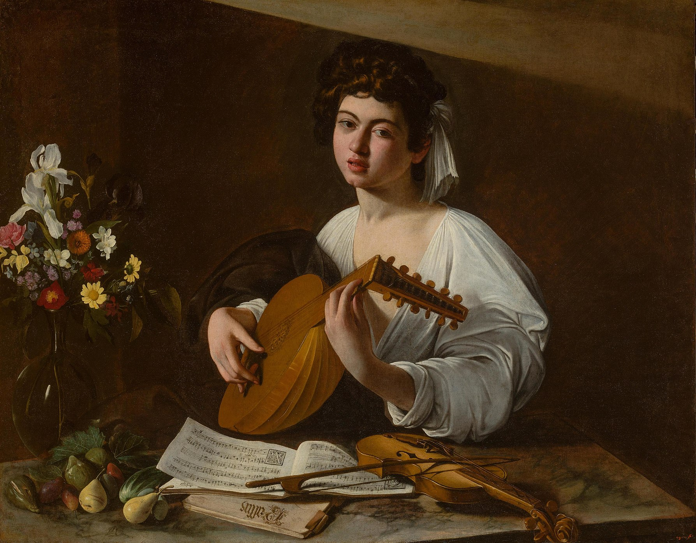
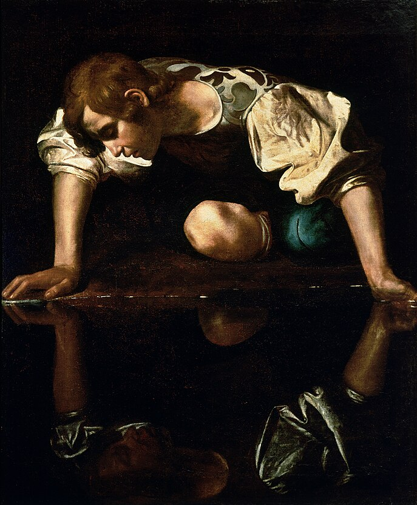
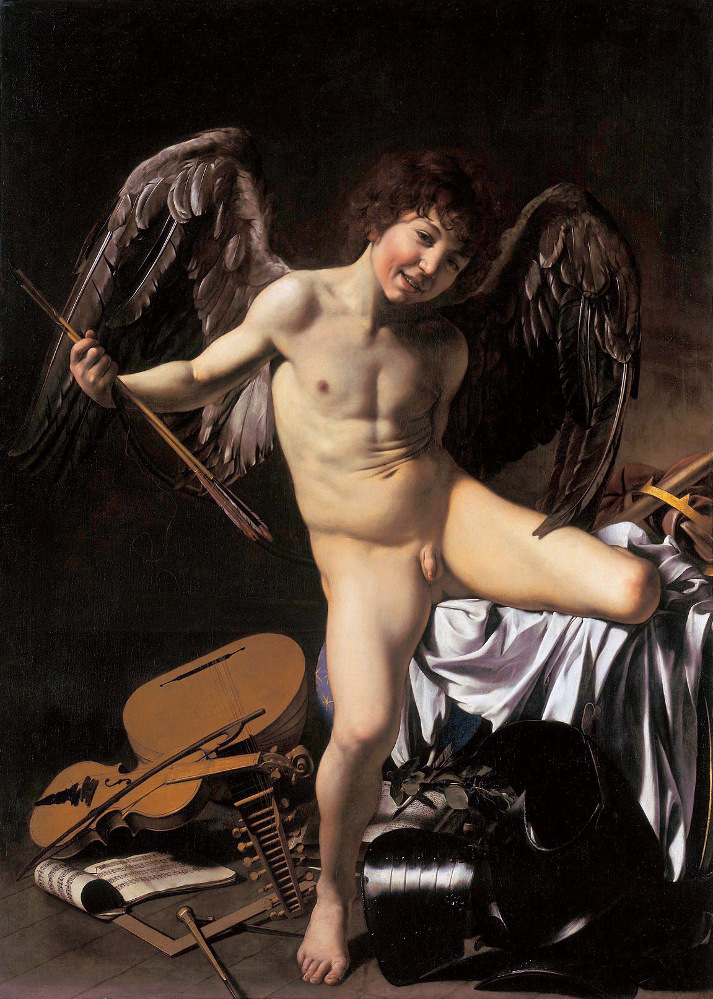
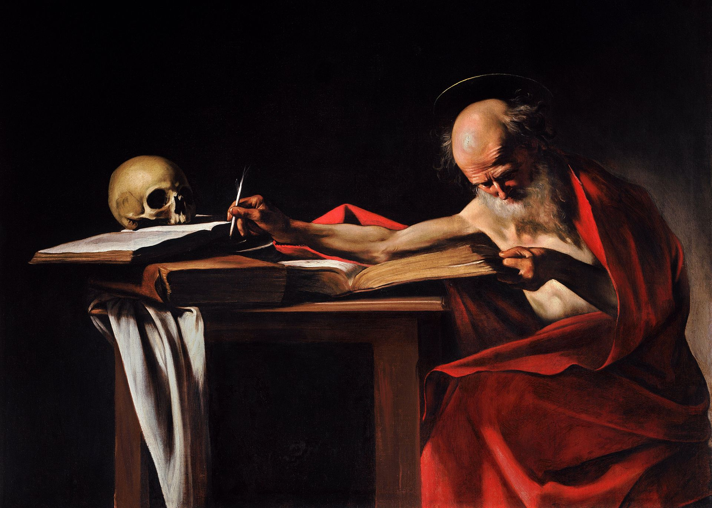
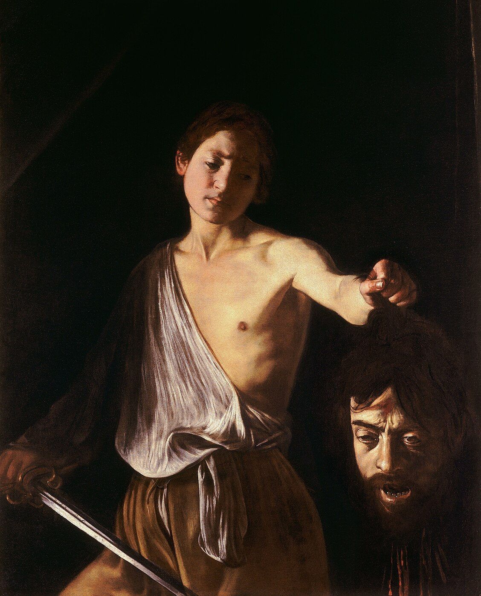
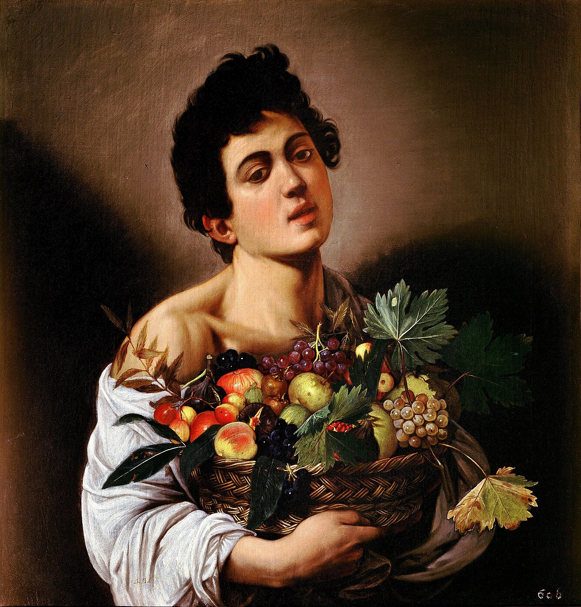
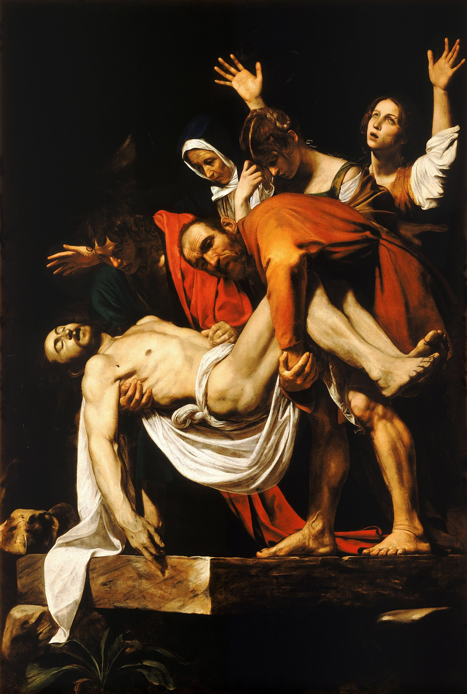
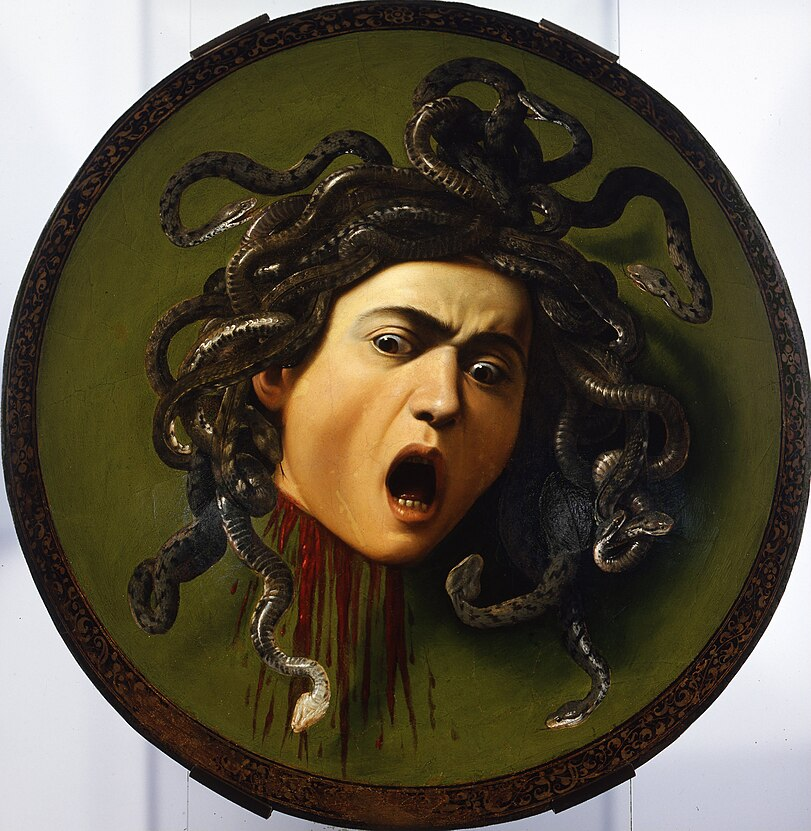
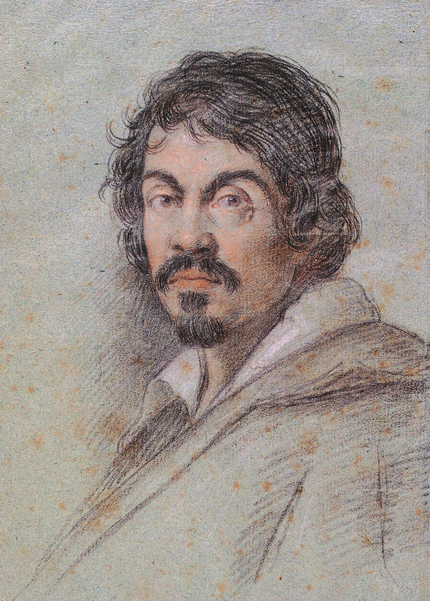

Biografie Caravaggios

Michelangelo Merisi da Caravaggio war ein italienischer Maler des
Barock, der von 1571 bis 1610 lebte. Er gilt als einer der
bedeutendsten Künstler seiner Zeit und ist bekannt für seinen
realistischen Stil und den Einsatz von starkem Licht und Schatten
in seinen Gemälden. Caravaggio hatte einen großen Einfluss auf die
Kunst des Barock und wird oft als Pionier des sogenannten
"Caravaggismus" angesehen.
Caravaggios Malerei zeichnet sich durch den Einsatz von starkem
Licht und Schatten, auch bekannt als Chiaroscuro, aus. Er nutzte
diese Technik, um dramatische Effekte zu erzeugen und die Figuren
in seinen Gemälden hervorzuheben. Darüber hinaus war Caravaggio
für seine naturalistische Darstellung von Menschen und Szenen
bekannt, wobei er oft einfache Alltagssituationen oder biblische
Motive realistisch darstellte. Sein Stil wird oft als kraftvoll,
emotional und provokativ beschrieben.
Ein Handgemenge endet blutig
Rom am Abend des 29. Mai 1606: Es ist ein Streit, der den Rest des
Lebens von Michelangelo Merisi bestimmen wird.Caravaggio, ist
stadtbekannt für sein aufbrausendes Temperament. Regelmäßig
befindet er sich wegen Beleidigungen oder gewalttätigen
Auseinandersetzungen in Konflikt mit dem Gesetz.
Bei einem Straßenfest kommt es zwischen Caravaggio, seinem Freund
Onorio Longhi und Ranuccio Tomassoni, dem Sohn des Kommandanten
der Engelsburg, zu einer Auseinandersetzung. Was der Anlass war,
ist heute nicht zweifelsfrei überliefert: Ging es um
Spielschulden? Ein verlorenes Tennis-Match? Eifersucht? Alles
möglich.
Schnell eskaliert der Streit. Caravaggio und Tomassoni
zücken schließlich die Schwerter. Nur der Künstler wird den Abend
überleben… und Rom schwer verletzt den Rücken kehren.

„Er war tatsächlich in vieler Hinsicht der erste moderne Künstler; der erste Künstler, der nicht einer Entwicklung folgte, sondern nach dem Prinzip radikalen Umsturzes voranschritt ..."